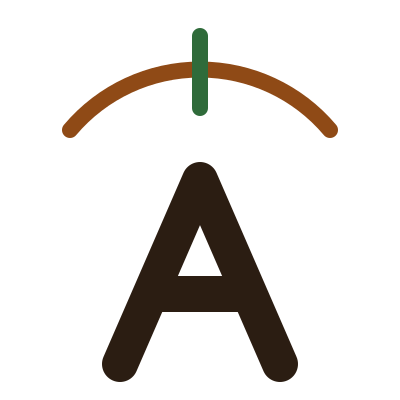

A-finador
Violão, afinação padrão
A
Ative o microfone e toque uma corda.
Cordas
Automático: a corda tocada é detectada sozinha. Toque numa corda da lista para travar nela.
Lá = 440 Hz

Violão, afinação padrão
A
Ative o microfone e toque uma corda.
Automático: a corda tocada é detectada sozinha. Toque numa corda da lista para travar nela.
Lá = 440 Hz